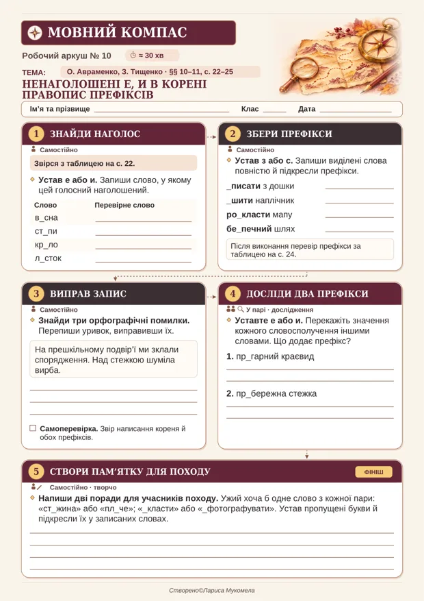
Мовний компас · № 10–21
Орфографічний практикум
Учнівських аркушів: 12 · Матеріалів для вчителя: 4. Оригінальні PNG для друку.
Архів міститиме аркуші для учнів і наявні матеріали для вчителя. Дочекайтеся завершення підготовки.

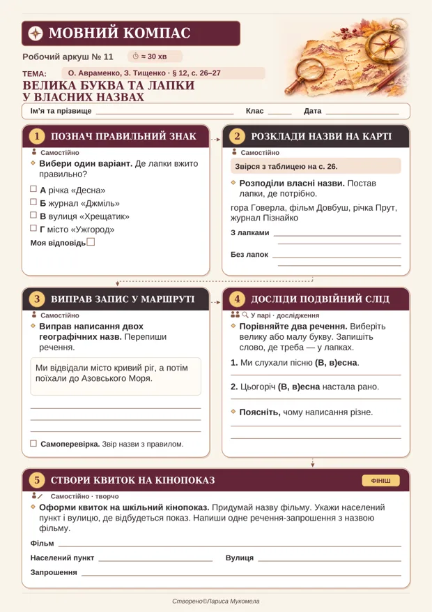

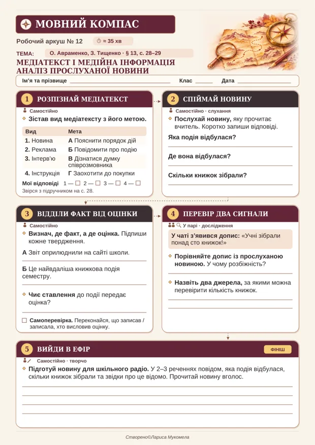
Аркуш № 12 · 7 клас
Медіатекст і медійна інформація. Аналіз прослуханої новини

Матеріал для вчителя

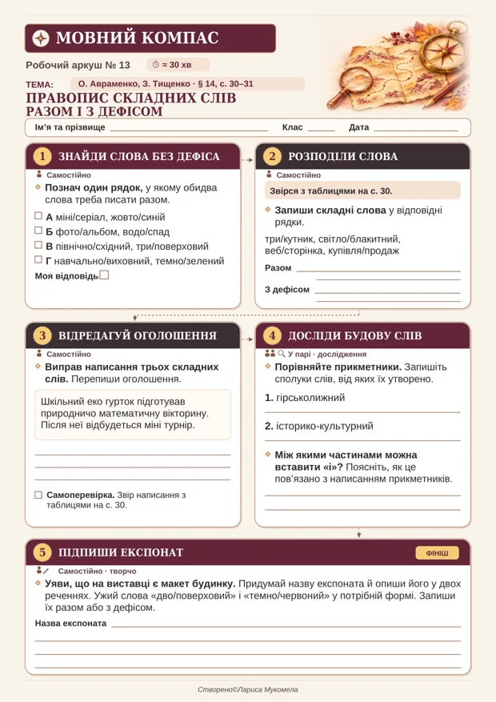

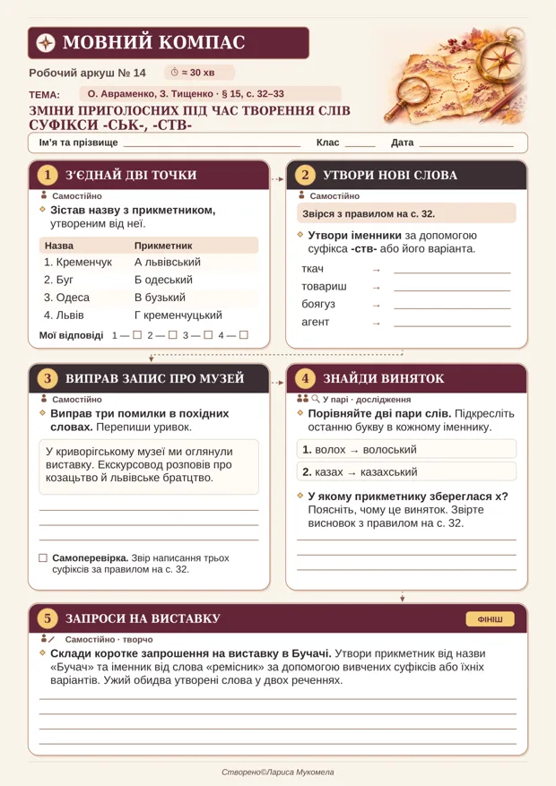

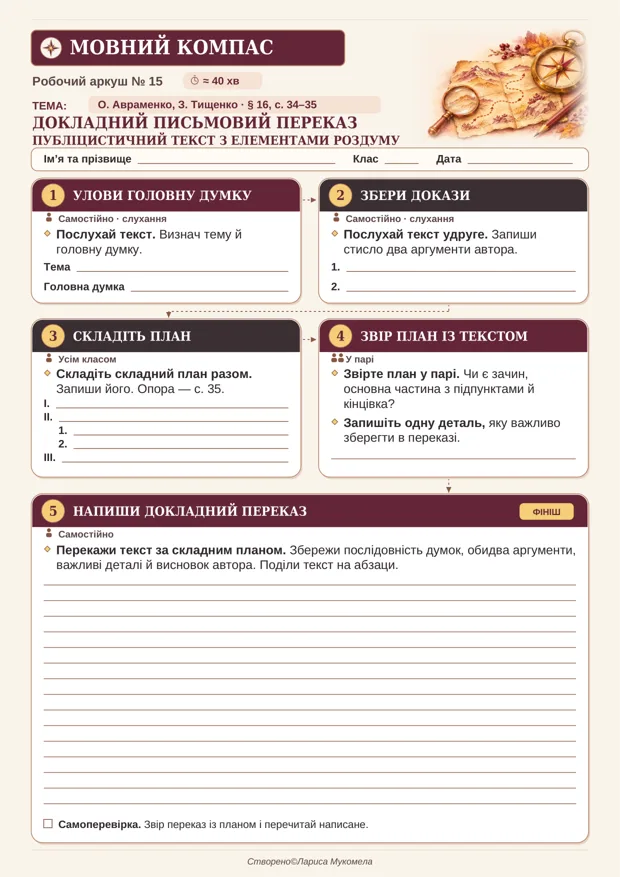
Аркуш № 15 · 7 клас
Докладний письмовий переказ публіцистичного тексту з елементами роздуму

Матеріал для вчителя

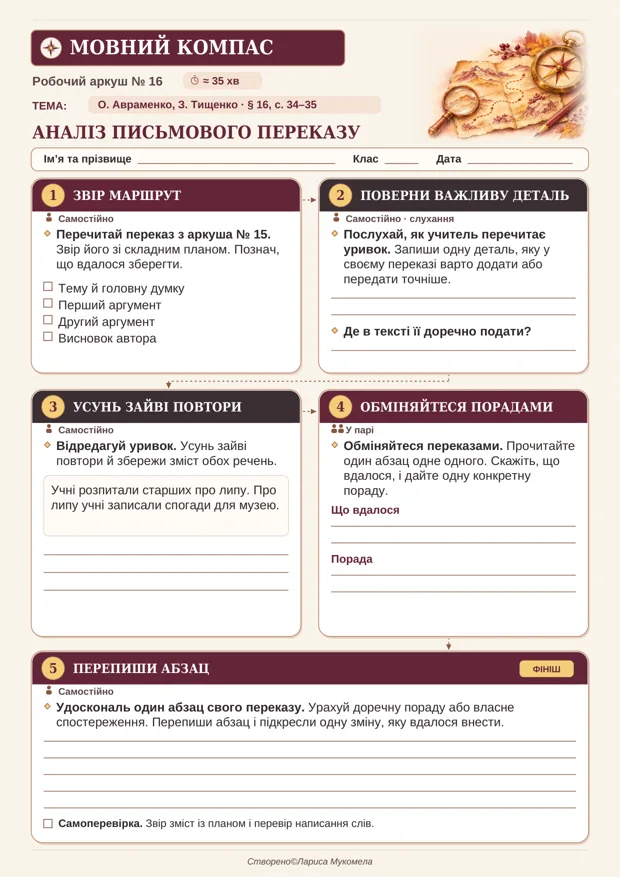

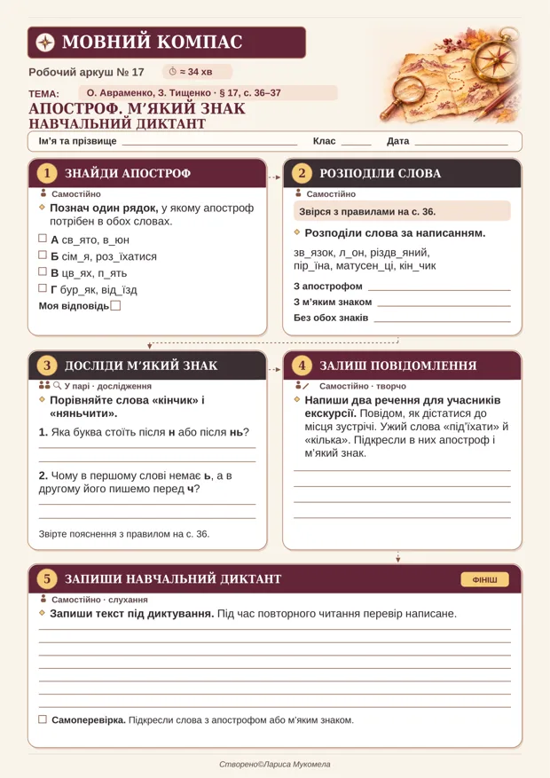
Аркуш № 17 · 7 клас
Апостроф. М’який знак. Навчальний диктант

Матеріал для вчителя

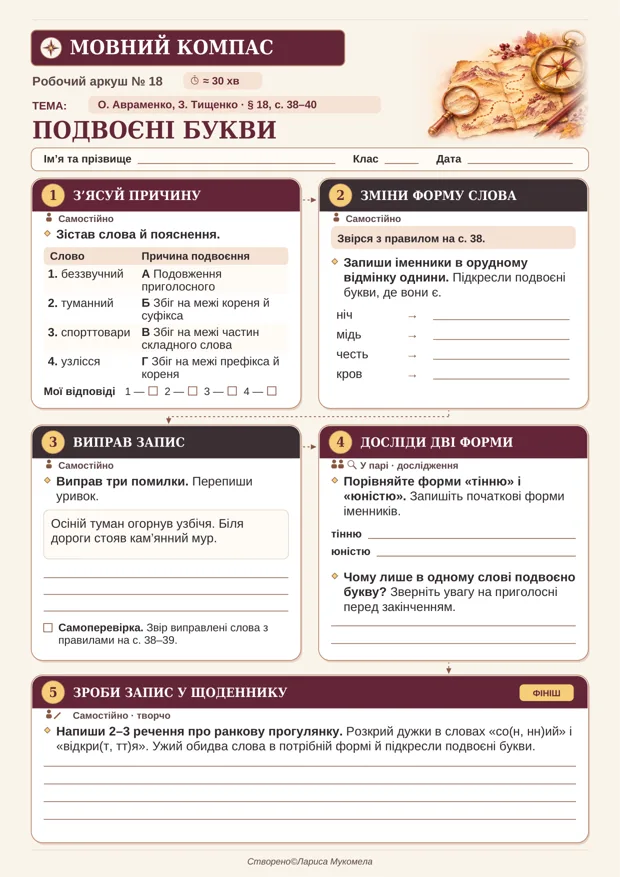

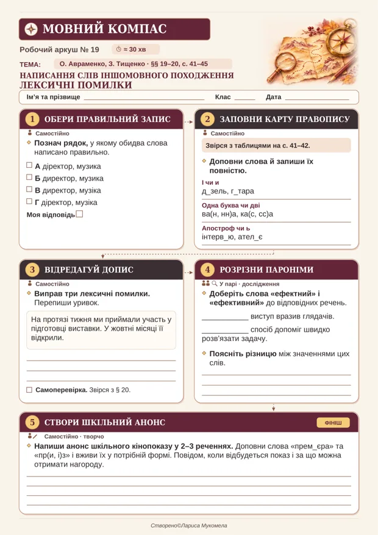

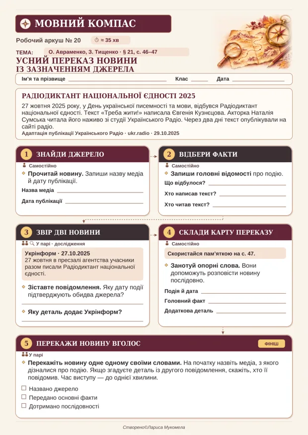
Аркуш № 20 · 7 клас
Усний переказ новини із зазначенням джерела

Матеріал для вчителя

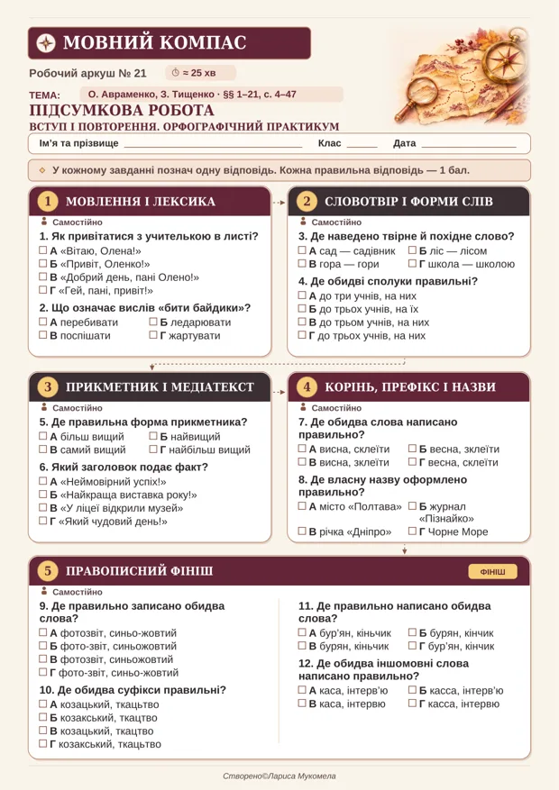